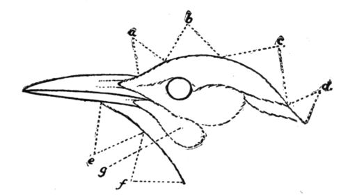

Head of a Flicker.
Occipital means “on the occiput.”
a. Forehead; b. crown; c. occiput; d. nape; e. chin; f. throat; g. jaw-patch, or mustache.
Nuchal means “on the nape.”
Primaries are the nine or ten wing-quills borne upon the last joint of the wing.
Secondaries are the wing-quills attached to the fore-arm bones.
Tertiaries are the wing-quills springing from the upper arm bones.
Wing coverts are the shorter lines of feathers overlapping these long quills.
Tail coverts are the lengthened feathers that overlap the root of the tail both above and below, called respectively upper and under tail coverts.
Ear coverts are the feathers that over-lie the ear, often specially modified or colored.
Rump, the space between the middle of the back and the root of the tail.
♂ is the sign used to indicate the male sex.
♀ is the sign used to indicate the female sex.
A subspecies is a geographical race, modified in size, color, or proportions chiefly by the influence of climate. These variations are especially marked in non-migratory birds of wide distribution, subject, therefore, to climatic extremes. The Downy and the Hairy Woodpeckers, for example, are split up into numerous races. It should be remembered that when a species has been separated into races, or subspecies, all the subspecies are of equal rank, even though they are differently designated. The one originally discovered and first described bears the old Latin name which consisted of two words, while the new ones are designated by triple Latin names—the old binomial and a new name in addition. The binomial indicates the form first described. The forms designated by trinomials may be equally well known, abundant, and widely distributed. For example, among the woodpeckers, the northern form of the Hairy Woodpecker was first discovered and bears the name Dryobates villosus; but the first Downy Woodpecker described was a southern bird, and the northern form was not separated until a few years ago, so that the southern bird is the type, and the northern one bears the trinomial, Dryobates pubescens medianus.
North America, by the decision of the American Ornithologists’ Union, is held to include the continent north of the present boundary between Mexico and the United States, with Greenland, the peninsula of Lower California, and the islands adjacent naturally belonging to the same.
The following key and descriptions will enable the student to identify any woodpecker known to occur within these limits:
A. Key to the Woodpeckers of North America.
Family characteristics: color always striking, usually in spots, bars, or patches of contrasting colors, especially black and white. Sexes usually unlike; male always with some portion of red or yellow about head, throat, or neck. Tails stiff, rounded, composed of ten fully developed pointed feathers (and two undeveloped feathers). Wings large, rounded, with long, conspicuous secondaries, and short coverts. Bill straight, stout, of medium length. Toes four, arranged in pairs, except in the three-toed genus. Iris brown, except when noted. Marked by a habit of clinging to upright surfaces and digging a deep hole in a tree-trunk for nesting. Eggs always pearly white.
I. Very large—18 inches or more; conspicuously crested. A.
II. Medium or small—14 inches or less; never crested. B.
- A. a1 Bill gleaming ivory white; fourth toe decidedly longest.
- Ivory-billed Woodpecker. 1.
- a2 Bill blackish; fourth toe not decidedly longest.
- Pileated Woodpecker or Logcock. 14.
- B. a1 Toes three; ♂ with yellow crown.
- Three-toed Woodpeckers. 9 & 10.
- a2 Toes four; crown never yellow (b).
- b1 Not spotted nor streaked either above or below (c).
- c1 Body clear black; head white.
- White-headed Woodpecker. 8.
- c2 Blue-black above; rump white; head and neck red.
- Red-headed Woodpecker. 15.
- c3 Greenish black above, with pinkish red belly.
- Lewis’s Woodpecker. 17.
- c4 Greenish black with sulphur yellow forehead and throat.
- Californian Woodpecker. 16.
- c5 Glossy blue-black with scarlet throat and yellow belly.
- Male of Williamson’s Sapsucker. 13.
- b2 Spotted with black or brown on breast and sides, but not streaked nor barred with white (d).
- d1 Brown spots on breast and sides; upper parts plain brown.
- Arizona Woodpecker. 7.
- d2 Black spots on breast and sides; wings and tail brilliantly colored beneath (e).
- e1 Wings and tail golden beneath; mustaches black in male, wanting in female.
- Flicker. 21.
- e2 Wings and tail golden beneath; mustaches red in both sexes.
- Gilded Flicker. 23.
- e3 Wings and tail golden red beneath; mustaches red.
- Red-shafted Flicker. 22.
- e4 Wings and tail golden red beneath; mustaches red; crown brown.
- Guadalupe Flicker. 24.
- b3 Streaked, spotted, or barred with white on back and wings (f).
- f1 Back streaked, plain, or varied, never barred with white; wings spotted with white (g).
- g1 Clear white and black; white streak down the back (h).
- h1 Medium size, 9-11 inches.
- Hairy Woodpecker. 2.
- h2 Small size, 6-7 inches.
- Downy Woodpecker. 3.
- g2 Grayish white and black; sides closely barred (i).
- i1 Back plain black, white stripe down side of throat.
- Female of Arctic Three-toed Woodpecker. 9.
- i2 Back with interrupted white stripe, white line down side of throat.
- Female of American Three-toed Woodpecker. 10.
- (Note.—The males are similar with the addition of the yellow crown. The three toes cannot ordinarily be seen in life.)
- g3 Yellowish (often dingy or smutty), white and black; under parts yellowish; back varied with white, no line nor streak; rump white; white wing-bars (j).
- j1 Breast with black patch; head of adult with red patches.
- Yellow-bellied Sapsucker. 11.
- j2 Breast and head red.
- Red-breasted Sapsucker. 12.
- f2 Back barred with white; wings spotted or barred with white (k).
- k1 Belly white; ear coverts white.
- Red-cockaded Woodpecker. 4.
- k2 Belly white; forehead black.
- Nuttall’s Woodpecker. 6.
- k3 Belly smoky brown; forehead and breast same.
- Texan Woodpecker. 5.
- k4 Belly sulphur or lemon yellow.
- Female of Williamson’s Woodpecker. 13.
- k5 Belly pinkish red.
- Red-bellied Woodpecker. 18.
- k6 Belly yellow, hind neck and forehead orange.
- Golden-fronted Woodpecker. 19.
- k7 Belly yellow, hind neck brown.
- Gila Woodpecker. 20.
B. Descriptions of the Woodpeckers of North America.
The following are descriptions of all the species of Woodpeckers found in North America, arranged in their proper genera and in the order given in the check list of the American Ornithologists’ Union, 1895; with the range of species and subspecies as defined by the same authority or by Bendire’s “Life Histories of North American Birds.”
- 1. Campephilus principalis, Ivory-billed Woodpecker.
- Glossy black except white secondaries (very conspicuous) and white stripe from beneath ear down neck and shoulders; white nasal tufts; bill white. Both sexes crested; ♂ with scarlet occipital crest, ♀ with crest black. Iris yellow. 20 inches.
- Cypress swamps of Gulf States, locally distributed.
- The largest, shyest, and rarest of our woodpeckers.
- 2. Dryobates villosus, Hairy Woodpecker.
- Black and white. Upper parts glossy black with a broad white stripe down the back; wings thickly spotted with white; under parts white; three outer pairs of tail feathers white; two white and two black stripes on sides of head; nasal tufts brownish white. ♂ with scarlet occipital patch. 9-10 inches.
- Eastern United States except South Atlantic and Gulf States, with the following subspecies, all the races being resident the year round, and breeding in most places where they are found:—
- a. D. v. leucomelas, Northern Hairy Woodpecker. 10-11 inches.
- Larger, whiter.
- British America.
- b. D. v. audubonii, Southern Hairy Woodpecker. 8-8.5 inches.
- Smaller, more dingy white.
- South Atlantic and Gulf States.
- c. D. v. harrisii, Harris’s Woodpecker. 9-10 inches.
- Upper parts with less white, few wing spots, under parts soiled white or smoky brown; larger than next.
- Northwest coast, northern California to Alaska.
- d. D. v. hyloscopus, Cabanis’s Woodpecker. 8.5-9.5 inches.
- White stripe down back very wide; purer white below than harrisii; fewer wing spots than leucomelas and villosus.
- Western United States, except northwest coast, east to the Rocky Mountains.
- e. D. v. monticola, Rocky Mountain Woodpecker. 10-11 inches.
- Larger; more white spots near bend of wing and secondaries than hyloscopus, fewer than villosus; pure white below.
- Rocky Mountains west to Uintah Mountains, Utah.
- 3. Dryobates pubescens, Southern Downy Woodpecker.
- Black and white; broad white stripe down back; wings thickly spotted with white; under parts white. ♂ with scarlet occipital patch. A miniature Hairy Woodpecker, differing only in having four outer pairs of tail feathers more or less white and the outermost barred. 6.5 inches. Like the Hairy Woodpecker, the Downy and its subspecies are resident and breed wherever they occur.
- South Atlantic and Gulf States.
- a. D. p. gairdnerii, Gairdner’s Woodpecker. 6.75 inches.
- Bears same relation to Downy that Harris’s does to Hairy Woodpecker; under parts smoky white; wings spots few.
- Pacific coast north to about lat. 55°.
- b. D. p. oreoecus, Batchelder’s Woodpecker. 7.5 inches.
- Under parts pure white; under tail coverts unspotted; fewer wing spots than medianus and pubescens.
- Rocky Mountain region of United States.
- c. D. p. medianus, Downy Woodpecker. 7 inches.
- The larger, whiter form seen in New England and the Northern States.
- d. D. p. nelsoni, Nelson’s Downy Woodpecker.
- Whiter, larger, with fewer black bars on outer tail feathers.
- Alaska and region north of 55°.
- 4. Dryobates borealis, Red-cockaded Woodpecker.
- Upper parts black barred with white, under parts dingy white; sides streaked and spotted with black; wings spotted with white; outer tail feathers barred; nasal tufts and large ear patch white; stripe of black down side of neck. ♂ with a tiny tuft of scarlet feathers on each side of head. 7.5-8.5 inches.
- Pine woods of southeastern United States, from Tennessee southwest to eastern Texas and the Indian Territory; casual north to Pennsylvania.
- 5. Dryobates scalaris bairdi, Texan Woodpecker, Ladder-backed Woodpecker.
- Upper parts barred with black and white on back, wings, and outer tail feathers; sides of head striped; forehead, nasal feathers, and under parts smoky gray, brownest on belly; crown speckled with white or red; ♂ with nape crimson. 7-7.5 inches.
- Southern border of United States, Texas to California, north to southwestern Utah and southern Nevada; generally resident.
- a. D. s. lucasanus, St. Lucas Woodpecker. Larger.
- Lower California, north to 34° in Colorado desert.
- These are both subspecies of a Mexican species not occurring within our limits.
- 6. Dryobates nuttallii, Nuttall’s Woodpecker.
- Upper parts barred with black and white; under parts and outer tail feathers white or dingy white; nasal tufts white; forehead and crown black sprinkled with white. ♂ with red on occiput and nape. 7-7.5 inches.
- Southern Oregon and California west of Sierra Nevada and Cascade Ranges; most common in the oak belt of the foothills.
- Easily distinguished from Downy Woodpecker by being barred on the back, instead of striped.
- 7. Dryobates arizonæ, Arizona Woodpecker.
- Upper parts plain brown, not spotted nor streaked; primaries dotted with fine white dots; outer tail feathers barred; under parts white, thickly spotted (except throat), with large, round, brown spots. ♂ with red occipital band. 7.5-8.5 inches.
- Southern Arizona and southwestern New Mexico; among oaks of the foothills from 4000 to 7000 feet elevation.
- 8. Xenopicus albolarvatus, White-headed Woodpecker.
- Glossy black all over, except showy white patch on primaries, and head and throat pure white (forehead and crown sometimes grayish). ♂ with broad occipital band of scarlet. 9 inches. “Iris pinkish red” (Bendire).
- Mountains of Pacific coast, east to western Nevada and western Idaho, usually in the pine and fir forests above 4000 feet altitude.
- 9. Picoides arcticus, Arctic Three-toed Woodpecker.
- Glossy black above, unmarked except by fine white spots on primaries; under parts grayish white, sides thickly barred black and white; three outer pairs of tail feathers white, sides of throat with broad white stripe. ♂ with large crown patch of deep yellow. 9.5 inches.
- British America, south into the northern tier of States and into the Sierra Nevada Mountains to Lake Tahoe.
- Most commonly seen in the track of forest fires, where it is usually abundant for about two years; rare outside of the extensive soft wood tracts, and usually found singly or in pairs except when on burnt land. I have found this species far more common than the next, and the best mark in life to be the white stripe on the neck, in distinction from the white line of P. americanus.
- 10. Picoides americanus, American Three-toed Woodpecker.
- Very similar to preceding species, but with narrow bars of white forming an interrupted stripe down the back; head thickly sprinkled with white in both sexes and a white line on nape or just below; a white line, too narrow to be called a stripe, down side of throat. ♂ with crown bright yellow. 9 inches. Same range in the East as last; replaced in West by following subspecies:—
- a. P. a. alascensis, Alaskan Three-toed Woodpecker.
- Smaller; more white; nape very white; more white on top of head.
- Alaska, south to 48°. (Mt. Baker, Washington).
- b. P. a. dorsalis, Alpine Three-toed Woodpecker.
- More white on back and head than P. americanus, less than alascensis; but continuous, not barred. “Iris dark cherry-red” (Mearns).
- Rocky Mountain region, south to New Mexico and Arizona.
- 11. Sphyrapicus varius, Yellow-bellied Sapsucker.
- Under parts whitish or pale sulphur yellow; upper parts black, mottled with pure or yellowish white; rump white; wings spotted, and with conspicuous white coverts; tail black with outer webs of outer feathers and inner webs of middle feathers light colored; sides streaked; breast with a broad black patch extending in a “chin-strap” to the corners of the mouth; sides of the head striped. Occiput black, nape white. ♂ with forehead, crown, chin, and throat crimson; ♀ usually with crown crimson, forehead black, and throat white, back more brownish; ♀ sometimes, and young always, with crown blackish. 7.5-8.5 inches.
- Colors vary much with age, sex, and season; the wing bar and yellowish tinge are good marks for all plumages; the rump and breast patch for adult birds.
- Eastern North America, breeding from Massachusetts northward, migrating in winter to the Southern States.
- a. S. v. nuchalis, Red-naped Sapsucker.
- Similar, but an additional red stripe on nape, and the black chin-strap replaced by crimson. 8-8.5 inches.
- Rocky Mountains to Coast Range, replacing the above in the mountains; usually breeding at from 5000 to 10,000 feet elevation.
- 12. Sphyrapicus ruber, Red-breasted Sapsucker.
- Body and under parts similar to S. varius, but back much less variegated with white. No black on breast, no white stripe through eyes. Nasal tufts brownish instead of white. Head, neck, and breast uniform crimson. Sexes alike. Young with crimson replaced by gray or “claret brown” (Bendire). 8.5-9 inches.
- Pacific coast, Sierra Nevada, and on both sides of Cascade Mountains; a summer resident only north of northern California.
- At first sight the Red-breasted Sapsucker might be mistaken for the Red-headed Woodpecker, but the two birds do not inhabit the same country.
- 13. Sphyrapicus thyroideus, Williamson’s Sapsucker.
- Sexes totally dissimilar except in having a white rump and yellow under parts. Male, glossy black all over except conspicuous white rump and white wing coverts, two white stripes on sides of head, white nasal tufts, white spots on primaries; sides and tail coverts mottled; a stripe of scarlet down middle of throat and brilliant yellow under parts. Female, light brown; head clear brown; body, wings, and tail closely barred with black and white; no white wing coverts; rarely a red throat like male; usually but not always a large black patch on breast, and always a yellow belly and white rump. Young males lack the red on the throat and usually the yellow on the belly; the black is dull, and the throat a dingy white. Young females lack the yellow on the belly and the black on breast, and are dull-colored and indistinctly marked. 9-9.5 inches.
- Rocky Mountain region, west to Sierra Nevada, Cascades and northern Coast Ranges, breeding at from 5000 to 9000 feet elevation. The handsomest of our woodpeckers.
- 14. Ceophloeus pileatus, Pileated Woodpecker, Logcock.
- Body blackish slate; wings with a large white patch conspicuous only when flying; throat white; a white stripe across cheek and down neck; jaw-stripe scarlet in male, blackish in female; both sexes with scarlet crest, but in the male the whole top of head (which is slaty black in female) equally brilliant. This red cap gives the bird the name of pileated. Iris yellow. 17 inches.
- Wooded regions of Southern States, Florida to North Carolina, very rarely near settlements, but far more common than the following subspecies of the North and West.
- a. C. p. abieticola, Northern Pileated Woodpecker.
- Larger; more extensive white markings; the black grayer or browner.
- From Virginia northward to 63° in the East, and in the West among the Rocky Mountains, north of Colorado, to the northwest coast; a shy woodland bird to be looked for only in the primitive evergreen forests, though sometimes occurring in any heavy timber and, in New England, upon the higher well-wooded mountains. The largest of the northern woodpeckers; resident.
- 15. Melanerpes erythrocephalus, Red-headed Woodpecker.
- Wings, tail, and upper parts glossy blue-black; rump, exposed secondaries, and under parts from breast downward pure white; head, neck, and breast crimson. Sexes alike. Young with red and black wholly or partly replaced by grayish brown; can be recognized by white markings. 9.5 inches.
- United States, west to Rocky Mountains; rare east of Hudson River, but ordinarily breeding wherever found; in winter usually migratory from its northern limits, the migration depending principally upon the food supply and depth of snow.
- 16. Melanerpes formicivorus, Ant-eating Woodpecker.
- Upper parts, wings, and tail glossy greenish black; rump and lower parts white; white patch on primaries, conspicuous in flight; upper throat and line about the bill dull black; forehead with wide white band; lower throat sulphur yellow; breast and sides thickly streaked with black and white. ♂ with crown and occiput crimson; ♀ with crown black, occiput crimson. Iris white. 7-9 inches.
- Mexico; western Texas.
- a. M. f. angustifrons, Narrow-fronted Woodpecker.
- Similar, but with a narrow band of white across the forehead; breast and sides not so thickly streaked.
- Lower California, never occurring within the borders of the United States.
- b. M. f. bairdi, Californian Woodpecker, El Carpintero.
- Similar to M. formicivorus, but the breast black, little streaked with white except along the sides; yellow of throat paler, or replaced by white. Iris white. Larger, 7.5-9.5 inches.
- Pacific coast, north into Oregon to 44°, east to southern New Mexico and Texas in the south and to the eastern slopes of the Sierra Nevada and Cascade Mountains in the north, but more abundant, on the western than on the eastern slopes of these mountains.
- 17. Melanerpes torquatus, Lewis’s Woodpecker.
- Upper parts, wings, and tail glossy greenish black; under parts pinkish red; chest and collar round hind neck hoary gray; crown and sides of head black; forehead, cheeks, and chin crimson. Sexes alike. Young with pink replaced by grayish. 10.5-11.5 inches.
- Pacific coast, east to Black Hills and Rocky Mountains between Arizona and 49th parallel; casual still farther east; migratory in its northern ranges; a silent, heavy flying bird, different in habits and appearance from the other woodpeckers; often seen flycatching.
- 18. Melanerpes carolinus, Red-bellied Woodpecker, Zebra Bird.
- Back and wings black, barred with white; under and upper tail coverts, middle and outer tail feathers, white varied with black; head and under parts ashy; belly tinged with reddish. ♂ with whole top of head and nape bright red;♀ with forehead and nape red, crown gray. 9-10 inches.
- Eastern and Southern States between the Hudson River and the Rocky Mountains, north to southern New York, Ohio, southern Michigan, etc.; migratory in its northern ranges.
- 19. Melanerpes aurifrons, Golden-fronted Woodpecker.
- Back and wings barred with black and white; rump white; entire under parts brownish white, unspotted (except under tail coverts); primaries unspotted, except at tip; tail black with slightly barred outer feathers; belly yellowish; forehead and hind neck orange in both sexes. ♂ with crown red set in a larger patch of clear gray; ♀ with crown clear gray. 9.5 inches.
- Central and southern Texas, north to about 33º; breeds wherever found.
- 20. Melanerpes uropygialis, Gila Woodpecker.
- Back and wings barred with black and white; head and lower parts smoky brown; rump black and white; tail barred on inner and outer feathers; primaries unspotted; belly yellow (not conspicuous). ♂ with red crown surrounded by brownish; “iris red” (Hayden). 9 inches.
- Southwestern New Mexico and Arizona to southeastern California, usually above 2000 feet altitude; its distribution depending principally upon the giant cactus.
- 21. Colaptes auratus, Flicker, Yellow-hammer, High-hole, Clape.
- Back and wings (except primaries) brownish gray, barred with black; under parts pale vinaceous spotted with black spots from breast downward; rump white; tail and wings golden yellow beneath, dark above, showing the yellow shafts; tail feathers with black tips below; top of head ashy gray, sides of head and throat vinaceous; a broad black crescent across breast, a bright scarlet one on nape. ♂ with black jaw patches; ♀ without them. 12 inches.
- South Atlantic and Gulf region, north to North Carolina.
- a. C. a. luteus, Northern Flicker.
- Larger; paler; black bars above narrower; less black and white below.
- North from North Carolina and west to the Rocky Mountains; casual farther west; migratory from its northern ranges.
- 22. Colaptes cafer, Red-shafted Flicker.
- Color pattern similar to above with the following differences: wings and tail red beneath instead of yellow; throat ashy gray; usually no red on occiput (though some specimens show a narrow crescent). ♂ with red jaw patches. 12.5-14 inches.
- Rocky Mountain region west to Pacific coast from Mexico to British Columbia, except northwest coast region of Oregon, Washington, and British Columbia, and occasionally east to Kansas and Nebraska; resident except in the more northern portions of its range.
- a. C. c. saturatior, Northwestern Flicker.
- Darker; smaller; narrower breast crescent.
- Northwest coast, replacing the above, from which it cannot be separated in life.
- 23. Colaptes chrysoides, Gilded Flicker; Cactus Flicker.
- Color pattern same as C. auratus, but throat gray; top of head brown; occiput without band; tail band broader and yellow paler than in C. auratus. ♂ with jaw patches bright red; “iris blood red” (Hayden).
- Central and southern Arizona and Lower California.
- a. C. c. brunescens, Brown Flicker.
- A curious subspecies of the last, smaller, with larger, more numerous spots and a smoky brown cast of plumage; black tail band very wide; jaw patches red; wings and tail yellow beneath.
- Lower (not southern) California; casual only in southern California; in Arizona to 35°.
- 24. Colaptes rufipileus, Guadalupe Island Flicker.
- Coloration like C. cafer, crown decidedly brown; crescent on nape wanting; jaw patches red; wings and tail red beneath.
- Guadalupe Island off the coast of Lower California.
INDEX
Aard-vark, 104.
Acorns, eaten by woodpeckers, 46, 51, 57, 58, 59.
Acquired habits, 61-66.
Adaptations of woodpeckers to environment,104-109.
Ant-bear, 104, 106.
Ants, as food for woodpeckers, 3, 30, 63, 105, 106.
Argument from design, 110.
Bear, black, 107.
Beechnuts, as food for woodpeckers, 57, 58, 59.
Beetles, as food for woodpeckers, 3, 11, 63.
Bill of woodpeckers as a tool, 68-76.
Borers, 3, 10, 11, 29, 30, 36.
Burroughs, John, quoted, 17.
Cacti, woodpeckers nesting in, 20.
Cannibalism among woodpeckers, 64.
Carpenter, the. See California woodpecker.
Carpintero, El. See California woodpecker.
Caterpillars, as food for woodpeckers, 10, 11, 29, 63.
Cecropia chrysalids, eaten by woodpeckers, 9.
Chestnuts, eaten by woodpeckers, 59.
Chickadee, 16, 21, 25, 30, 32, 74.
Chipmunks, hoarding food, 60.
Clape. See Flicker.
Creeper, brown, 5, 81, 87, 88.
Crossbills, eating salted food, 31.
Crow, hoarding habit, 60; 74.
Cuckoo, ground, 82.
Cuckoos, yoke-toed, 5, 82.
Drumming of yellow-bellied sapsucker, 16, 17.
Evolution, 109, 112.
Feeding young, how the flicker does it, 24, 25.
Fence-posts used by woodpeckers, 48, 56, 58.
Finch, purple, 39.
Finches, 74.
Fish-spears, 12, 13.
Flicker, 6, 7, 15, 18, 20, 23-26, 73, 74, 82, 88, 89, 95, 97-99, 101, 103, 106, 125.
brown, 126.
cactus, 126.
gilded, 126.
Guadalupe Island, 127.
northern, 126.
northwestern, 126.
red-shafted, 126.
Flycatching habits of woodpeckers, 7, 56, 106, 124.
Foot, of a four-toed woodpecker figured, 77.
of a three-toed woodpecker figured, 80.
discussed as a tool, 77-85.
Grasshoppers, as food for woodpeckers, 3, 56, 63.
Grosbeaks, pine, 39.
Grouse, ruffed, 14, 15.
Grouse, sharp-tailed, 15.
Hawk, sparrow, 21.
High-hole. See Flicker.
Hoarding habits, 62, 63.
Hummingbird, Anna’s, 27.
Hummingbirds, 25, 103.
Hyoid bones, 100-103.
Jay, blue, hoarding habit, 53, 60.
Kinglets, 5.
Lightning rods attracting woodpeckers, 18.
Logcock. See Woodpecker, pileated.
Maple, rock and red, sugar made from, 36.
Maize, eaten by English sparrows, 62, 65.
Mandibles of woodpeckers, 13, 101.
Martin, sand, 20.
Mice, hoarding habit, 60.
Migration, dependent upon food supply, 63.
Mountain-ash trees, sought by woodpeckers, 38.
Nesting of woodpeckers, 20-23.
Nests, in unusual places, 20.
North America, ornithologically defined, 114.
Nuthatches, 5, 21, 30, 81.
Oaks, used by Californian woodpecker for storing nuts, 48, 49.
Oranges, eaten by woodpeckers, 65, 66.
Owls, 15, 21, 80.
Pangolin, as an ant-eater, 104.
Parrot, 13, 82.
Parroquet, Carolina, 5.
Pigeon, domestic, 27.
Pines, acorns stored in, 49.
“Ploughshare,” anchylosed vertebræ of tail, 86.
Ravens, 74.
Reason in woodpeckers’ hoarding, 62.
Red-head. See Woodpecker, red-headed.
Robins, 39.
Sap, not used as an insect-lure, 41.
how its loss harms the tree, 44, 45.
Sapsucker, orange, 65. See, also, Woodpecker, red-bellied.
red-breasted, 122.
red-naped, 121.
Williamson’s, 122.
yellow-bellied, 7, 15-17, 33-45, 59, 102, 103, 105, 106.
Skull of woodpecker figured, 101.
Sparrow, English or house, 21, 62, 65.
Spears, 12, 13.
Spruce, acorns stored in, 47, 49, 53.
Squirrels, thievishness of, 23, 53.
Subspecies defined, 114.
Swallow, eaves or cliff, 61, 64, 65.
Swallow, tree, 21.
Swift, chimney, 5, 20, 61, 87, 88.
Tail, shape, 89.
number of rectrices, 95.
experimental demonstration of shape a priori, 91.
reason for shape, 98.
Tail-feathers studied, 94-97.
Taste in the woodpeckers, 38, 39.
Telegraph poles resorted to by woodpeckers, 7, 18, 48.
Thumb, of birds, 80.
Tin roofs resorted to by woodpeckers, 17, 55.
Titmouse, crested, 21.
Toes, numbering of, 79, 80.
Tongue, appearance of, 99.
figured, 99.
bones of, 13, 100-103.
Trogons, yoke-toed, 82.
Vanessa butterfly, 16.
Vegetable food of woodpeckers, 3, 31.
Vireos, 30.
Warblers, 30.
Weevils, not the object in storing nuts, 52.
Woodpecker, Alaskan three-toed, 121.
alpine three-toed, 121.
American three-toed, 121.
ant-eating, 123.
arctic three-toed, 120.
Arizona, 120.
Batchelder’s, 118.
Batchelder’s, 118.
black-breasted, 6. See, also, Williamson’s sapsucker.
Cabanis’s, 118.
Californian, 46-54, 56, 66.
downy, 6, 17, 21, 28-33, 59, 63, 70, 74, 83, 86, 88, 95, 107, 114, 118.
Gairdner’s, 118.
Gila, 55, 125.
golden-fronted, 55, 102, 125.
hairy, 6, 9, 28, 32, 59, 63, 74, 83, 86, 88, 89, 95, 97-99, 107, 114, 117.
Harris’s, 118.
ivory-billed, 70, 71, 73, 83, 88, 89, 93, 97, 98, 107, 117.
ladder-backed, 119.
Lewis’s, 6, 13, 55, 59, 66, 103, 124.
narrow-fronted, 124.
Nelson’s downy, 119.
northern hairy, 118.
northern pileated, 123.
Nuttall’s, 119.
pileated, 6, 71, 73, 83, 88, 93, 95, 98, 99, 107, 123.
red-bellied, 6, 55, 65, 124.
red-cockaded, 119.
red-headed, 6, 7, 11, 55-58, 60-64, 105, 123.
Rocky Mountain, 118.
St. Lucas, 119.
southern downy, 118.
southern hairy, 118.
Texan, 119.
three-toed, foot figured, 80.
white-headed, 120.
Woodpeckers, advantages of, as subject for study, 2.
bill as a tool, 69-73.
carpenters or miners, 68.
character of, 7, 8.
coloration of, 5.
coloration of sexes, 6.
covered nostrils, 74, 75.
favorite haunts, 3, 7.
foot, structure and uses, 77.
habit of drumming, 17.
how to recognize the woodpeckers, 4.
inferences from study of bills, 75.
hunting borers, 10, 11.
nesting, 21, 22.
preferred foods, 3, 7.
tail, study of, 86-99.
winter quarters, 22.
wooing, 15.
Yoke-toed feet, 82.
Zebra bird. See Woodpecker, red-bellied.